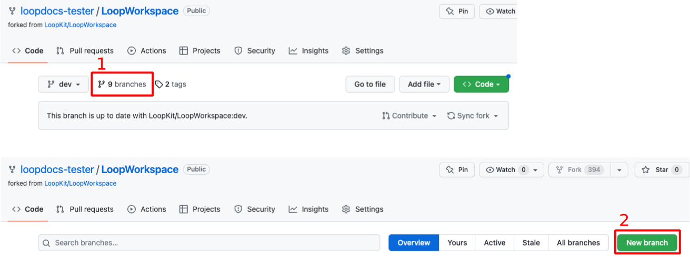
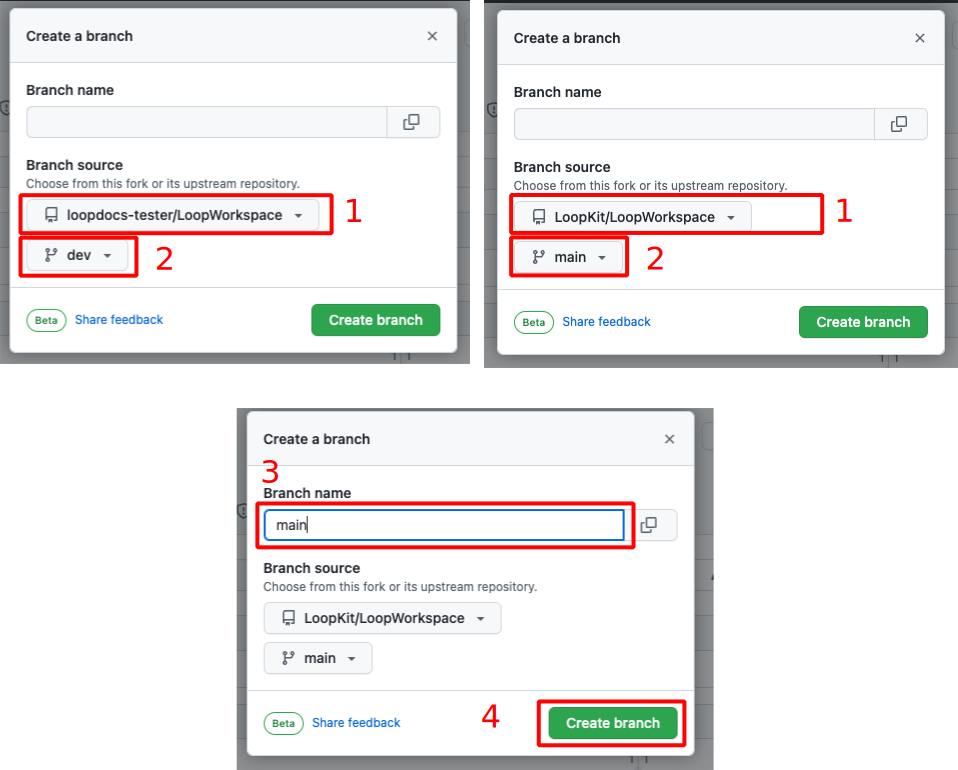

GitHub Update
Update Loop using GitHub Actions¶
This is only available with Loop 3 and Loop development branch.
Time Estimate
- If you need or choose to update your GitHub Personal Access token
- 5 minutes to regenerate token
- 5 minutes to update one of your Secret Settings
- Start the Build: 5 minutes
- Wait for build to complete and appear in TestFlight on your phone
- 30 to 45 minutes
Summary
You must build Loop every 90 days when you use the GitHub build method.
- For GitHub token update, start at GitHub Token
- Otherwise, start at GitHub Build Update
FAQs
- Do I need a computer? No
- Can I do this on my phone? Yes
- Should I regenerate my GitHub Personal Access token every time? It depends. Getting a new token resets the 90 day clock for when you get your email reminder. That can be a handy reminder that you need to rebuild to avoid TestFlight expiration.
- I built with GitHub before Loop 3 was released, do I need to do anything? Yes. Please follow this links GitHub Early Adopters
GitHub Update Summary¶
The brief summary is listed below:
- Log in to GitHub
- Update your GitHub token (if needed)
- Go to your LoopWorkspace repository
- Update your fork (if needed)
- Select Actions: Build Loop
-
After Build completes and is processed by TestFlight (about 30 to 45 minutes)
- Loop is automatically updated on the phone when automatic updates are enabled in TestFlight (default) for that phone
or
- Open TestFlight on that phone to install new version when automatic updates are disabled
GitHub Token¶
If your GitHub Personal Access Token has not expired and you don't want to regenerate it, skip ahead to GitHub Build Update.
If you received an email warning you that your token will expire soon, you can follow the steps shown at GitHub Token Email.
Regenerate GitHub Token¶
You can regenerate your GitHub Personal Access Token at any time.
The graphics and instructions in this section are taken from a computer browser.
If you want to update your token, it's best to make sure you are already signed in to GitHub. If you haven't logged in recently, then you may see the authentication screen. Click on the link below, and authenticate if requested by clicking on the green Send SMS button

Once you are authenticated, your screen should be similar to the graphic below. The FastLane Access Token is a clickable link.

After you click on FastLane Access Token your screen should be similar to the graphic below.

Click on Regenerate token (red highlight in previous graphic) to see screen similar to next graphic. If your previous token expired in 30 days, be sure to change Expiration to 90 days to match the TestFlight expiration rhythm. Once happy with Expiration selection, click on the green Regenerate Token button (red highlight in following graphic).

Copy the token using the copy icon and save it along with your other secret settings. The next step is to update GH_PAT in your LoopWorkspace Repository Secrets.

Skip ahead to Update Secrets.
GitHub Token Email¶
You will get an email from GitHub when your Personal Access token is getting close to expiration.
This token is used as GH_PAT in your repository secrets when you initiate the Build Loop action. You will need to regenerate a new one and update the secret with the new token.
I renewed my GitHub Personal Access token, updated my LoopWorkspace Repository GH_PAT Secret and started the build action for Loop, all on my phone in just a few minutes.
All the graphics in this section are from my phone.
Email warning:

Click on the "regenerate" link to be taken to your GitHub account (you might need to follow 2-factor authentication to get access). If your Expiration is set at 30 days, as shown, you should select 90 days to match the TestFlight expiration rhythm. That's how often you need to rebuild Loop using GitHub actions. The email acts as a handy reminder. Click on the green Regenerate token button.
As soon as you regenerate, you cannot build again until you Update Secrets. Your current app in TestFlight is not affected, but might may be close to expiring. So finish the job while you are thinking about it.

The next screen appears with your token (mine is not shown for security reasons - it's above the portion displayed). Copy your token by clicking on the copy button.

Update Secrets¶
This example is for updating GH_PAT in the Secrets for your repository, but the same method can be applied when changing any Secret.
This can be done with the GitHub Personal Access Token still in your paste buffer - but to be safe, save the token with your other secret settings. If you lose track, just Regenerate GitHub Token again.
The graphics and instructions in this section are using a phone.
Scroll all the way up to the top of the window to see the hamburger menu, click on it and choose your name and icon (near bottom of the list). Scroll down to the LoopWorkspace repository and tap on the link.
Do a horizontal scroll (required on your phone, probably not on a browser) on the row that starts with Code and ends in Settings and tap on Settings. If you don't see Settings (if last item on row is Insights), then you are not on your fork or you need to sign in to your GitHub account. You should see username/LoopWorkspace with forked from LoopKit/LoopWorkspace underneath.
Review the GIF below that shows horizontal scroll to find and tap on Settings, then scroll down on the phone to reach Secrets, open the drop down indicator to see Actions.

After tapping on Settings -> Secrets -> Actions, keep scrolling on the same screen, past the Action secrets / New repository secret row, until you see your Repository secrets list as shown in the next GIF.

When you see the secret, GH_PAT, tap on the pencil and then scroll down until you see the Actions secrets / Update secret dialog as shown in the next graphic. Paste your new token into the Value section and tap Update Secret.

Scroll all the way to the top of the screen and tap on your LoopWorkspace link. Then follow the GitHub Build Update instructions to start a new build.
GitHub Build Update¶
- Sign in to GitHub and select your LoopWorkspace repository from your repositories list
-
Look to see if your fork is up to date
- The dropdown in this graphic shows the dev branch.
- To build Loop 3.0, you will want main, which should be the default. For a specific release, such as 3.1.2 (which does not exist - so don't look for it), it will be that specific release.
- If your fork is up to date with LoopKit version for that
{branch}, you will see the messageThis branch is up to date with LoopKit/LoopWorkspace:{branch}}- there is no need to build again unless you are near your 90 day expiration data - in which case, proceed to Step 3 - If your fork shows a message such as
This branch is 3 commits behind LoopKit:devand you want to update and build, then clickSync Forkby tapping where the red rectangle is shown in the graphic below, then in the pop-up window, tap onUpdate branch

-
Build Loop - refer to graphic below as you follow the steps
- Click on the 'Actions' tab
- Select the 'Build Loop' workflow on the left
- Look on the right and click 'Run workflow'
- Make sure the desired Branch is selected
- Click on the green
Run workflowbutton in the dropdown - Wait ~25-45 min for the build to complete and be processed by TestFlight

-
You'll receive an App Store Connect email confirming that the build has completed processing, and a TestFlight email confirming the (now updated) app is ready to test.
- If you get an email that the action failed, then return to your repository and look for Build Action error messages
- Click on the most recent Build job with the red x by it
- If the details show this message, "Could not install WWDR certificate", make sure your developer account is in good standing and that there are no agreements that need to be accepted
- Repeat the build (previous step) and it should be fine the next time
- If you get an email that the action failed, then return to your repository and look for Build Action error messages
- The updated Loop app will show up in your TestFlight app
- But wait until you see "Expires in 90 days"
- The app is in TestFlight from your prior build
- It takes time for the update to show up in the TestFlight app
- You will also see a build number in parentheses, that will increment each time
- If you chose to leave TestFlight Automatic Updates enabled for Loop, the updated build will be installed over your existing app.
-
If you choose to disable automatic updates
- Open TestFlight on your phone and click
Installas shown in the GIF below - If you have automatic updates enabled in TestFlight, the app should have installed automatically, in which case the message should say
Open.

- Open TestFlight on your phone and click
GitHub Build Details¶
In the Loop app, once installed on your phone, tap on Settings -> Support -> Issue Report. The graphic below shows an example of the Build Details included in the report.
- Note that the profileExpiration listed here is irrelevant - the app expires when the TestFlight expiration indicates - a later version of Loop 3 will probably capture that date and provide a notification in the app; but for now, you must remember
- Notice that the sourceRoot starts with
/Users/runner/work/LoopWorkspace- When you see that sourceRoot, you know this app was installed from GitHub build and TestFlight
- In this case the buildDataString is associated with when the app was built, not when it was installed on your phone
- You can use 90 days from this date, as well as the Expires in ## Days on the TestFlight app, to know when you need to rebuild
- If you set your GH_PAT token to expire in 90 days, you'll get an email about a week ahead - that acts as good reminder

GitHub Early Adopters¶
This section is for people who used the GitHub build method before Loop 3.0.0 was released and want to keep using it.
There are two steps
- Connect your LoopWorkspace fork with the main branch
- Change your LoopWorkspace fork to have the main branch as the default branch
Return to Your LoopWorkspace Fork¶
You need to be logged into GitHub.
There are a lot of ways to get to your fork of LoopWorkspace - any method is fine. Only one is provided in these docs.
- Click on your personal icon at upper right to see the drop-down menu and select "Your repositories"

- You should see (at least) 2 repositories: Match-Secrets and LoopWorkspace
- Click on LoopWorkspace to open that repository
Connect Fork to New Branch¶
- Click on the Branches icon to open the branches display as shown in the graphic below
- Click on the
New branchbutton.

If you previously built when dev was the default branch, your initial new branch dialog view will look the top left graphic.
- Click on the drop down menu labeled 1 in the graphic and choose LoopKit/LoopWorkspace as show in the top right graphic
- Click on the drop down menu labeled 2 in the graphic and choose main
- Click on the Branch name box labeled 3 in the graphic and type main
- Review the dialog items to make sure everything is correct and then tap on Create branch

Set Default Branch¶
Whenever you tap on Actions: Build Loop, you have the chance to select the desired branch before starting the workflow. But it's really better that the branch you want, typically main, be the default. That way you won't forget when you start the workflow (tell GitHub to start building).
If your desired branch is not the default branch, these are the steps to modify the default branch. For this example, we show how to change from a default branch of dev to a default branch of main. Note - only the owner of the repository can take this action and they must be logged in. Otherwise the Settings tab does not appear.
For the numbered steps below, refer to the graphic found under each group of steps.
- Click on the Settings Icon near the top right of your LoopWorkspace
-
On the left side, click the
Branchestab to open the Default Branch dialog screen
-
To the right of the default branch name there is a pencil and a left-right arrow icon
- Tap on the icon to bring up the
Switch default branch to another branchdialog
- Tap on the icon to bring up the
- Click on the dropdown next to the current default branch, in this example,
dev - Select the desired default branch, in this example,
main -
Click on the
Updatebutton
-
You will be presented with an are-you-sure question.
- Click on the red
I understand, update the default branch.button

- Click on the red
Your default branch has been changed.